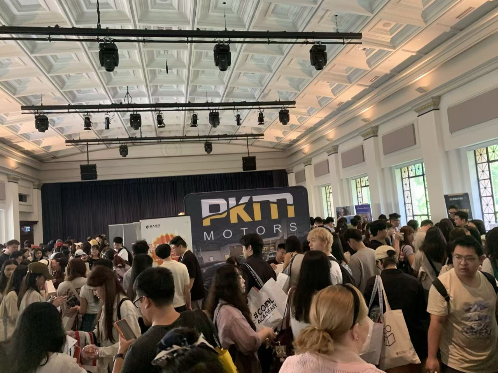

悉尼新生节
招商 deck
8 月 28 日 · Sydney Town Hall · 面向品牌合作的专业招商提案

CBD 核心场地，开学季最适合品牌建立第一波学生认知与转化。
悉尼新生节聚焦 四校新生、CBD 地标场地 和 现场互动转化。它既像一场迎新活动，也像一场针对大学生人群的线下品牌 launch。
预期到场新生
悉尼核心高校
展位 + 礼包 + 互动
新生强需求
刚到悉尼的新生对餐饮、出行、通讯、租房、金融、生活服务都有即时需求。
时间窗口好
在开学季前后触达，品牌更容易在用户心里占到“第一选择”的位置。
现场转化强
扫码、领礼、咨询、加群、二次触达可以在同一场景内连续发生。
招商表达清晰
既有流量曝光，也有线索沉淀和复盘，方便品牌评估投入产出。
活动面向 USYD、UNSW、UTS、Macquarie 四校新生，覆盖悉尼主流华人留学生圈层，适合需要在新学期建立品牌认知的商家。
综合型高校，生活服务、金融、通讯、餐饮接受度高。
理工与商科学生集中，适合职业、教育、科技类合作。
市中心通达优势明显，现场到场意愿与活动参与度高。
覆盖北区学生群体，让悉尼活动不止停留在内城单点。
地点：Sydney Town Hall
日期：8 月 28 日
定位：专业、正式、交通友好、适合招商展示
城市地标感
比普通校园摊位更有“活动主场”气质，适合品牌做正式亮相与内容拍摄。
交通动线好
Town Hall 站与 George St 核心商圈加持，到场门槛低，方便学生集中到场。
室内环境稳定
不受天气影响，品牌展位、礼品展示和现场互动体验更完整。
招商表达更专业
场地本身就提升品牌感，适合金融、教育、生活方式和服务类商家参与。


免费礼品包
新生到场就能感受到“值得来”，礼品包是最直接的进场驱动力。
互动任务
集章、抽奖券、展位任务让学生不是匆匆路过，而是主动走完整个现场。
生活信息
将悉尼生活、学习、求职、城市资源整合到活动中，活动价值感更强。
认识同学
新生愿意为社交和融入感到场，这能自然放大活动的留存时间与分享意愿。
第一波用户心智
新生刚进入城市阶段，品牌更容易被记住，也更容易建立首次尝试。
面对面线索沉淀
展位交流、扫码进群、优惠券和礼品领取让线索不是“看过”，而是可继续跟进。
内容可二次放大
现场照片、短视频、学生 UGC 和主办方回顾内容，能把线下触点继续延长到线上。
公众号 / 小红书 / 社群 / 私域通知
展位触达 / 扫码 / 礼包 / 游戏任务
社群承接 / 优惠激活 / CRM 跟进
课代表系列 · 大学生私域
长期运营澳洲高校内容和线下活动，对新生流量组织、到场动员和现场执行更熟。
城市华语媒体协同
悉尼场的差异点不只在四校，也在于它能连接更广的华语社区影响力，为高客单价品牌提供更稳的品牌感支撑。
现场的关键不是把品牌摆出来，而是让学生有理由一站一站逛下去。抽奖券和任务机制，会把人流、互动和扫码行为自然串起来。
签到
领取基础抽奖券和活动地图。
逛展位
完成品牌互动任务，换取更多抽奖券。
社交分享
朋友圈 / 小红书 / 合照分享提升内容扩散。
抽奖与留资
把高参与人群沉淀为可复访线索。
适合首次参展，建立基础曝光与到场互动。
推荐档，平衡曝光、现场资源与预热支持。
适合需要优先展位与更强品牌存在感的合作方。
悉尼专属高端档，适合追求定制化和行业排他价值的品牌。
基础共性
四档均以悉尼新生节现场展位为核心，叠加不同强度的线上预热、现场资源和后续反馈支持。
推荐策略
如果希望兼顾到场触达和后续内容扩散，Gold 最适合大多数招商场景；Premium 适合需要做强认知和类独家合作的品牌。
| 权益维度 | Silver | Gold | Diamond | Premium |
|---|---|---|---|---|
| 现场展位 | 标准展位 | 优先区域 | 高曝光区 | 定制展示 |
| 活动前预热 | 基础提及 | 重点推荐 | 多轮种草 | 联合企划 |
| 线上内容露出 | 基础露出 | 专题级内容 | 多渠道强化 | 深度定制 |
| 主持人口播 / 现场鸣谢 | 有 | 强化 | 重点口播 | 联合呈现 |
| 互动玩法嵌入 | 基础任务 | 优先嵌入 | 深度互动 | 定制机制 |
| 行业排他 | 无 | 可谈 | 优先 | 可配置 |
| 活动后反馈 | 基础复盘 | 详细反馈 | 深度反馈 | 专项总结 |

“活动组织成熟，学生愿意停下来交流，和普通派单完全不是一种触达深度。”
往期合作方反馈“礼品和任务机制把流量真正带进了展位，后续也更容易做社群承接。”
往期合作方反馈以上为匠人学院新生节往期综合活动口径，用于说明活动模型与招商逻辑。

专业，但不呆板
热闹，也有秩序
这也是悉尼招商版最重要的气质: 让品牌相信这是一场值得投入的活动，让学生觉得这是一场愿意参与的活动。
让品牌在
开学第一波被看见
适合餐饮、通讯、银行、教育、租房、生活方式、求职服务等需要在新生节点建立认知与留资的品牌。